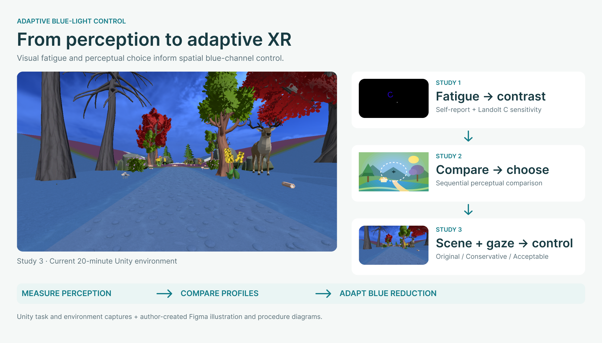
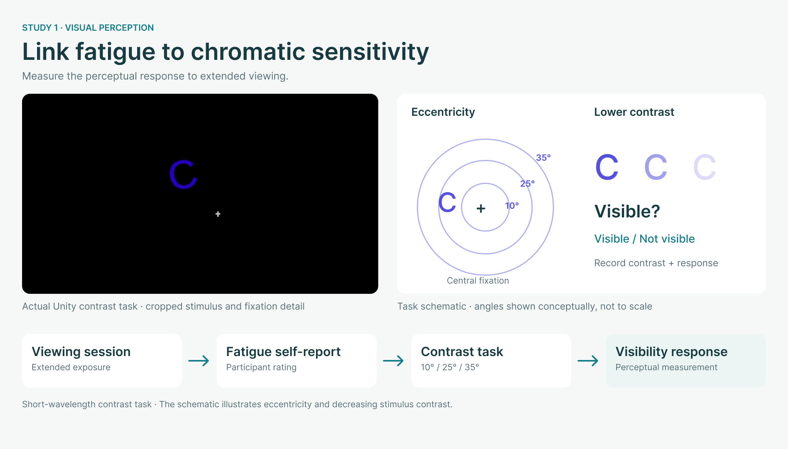
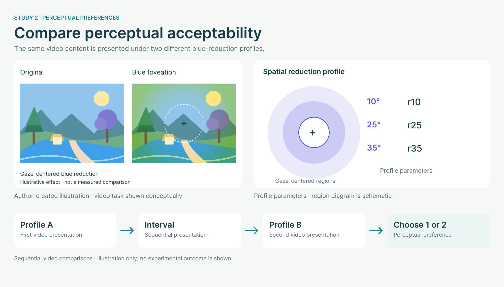
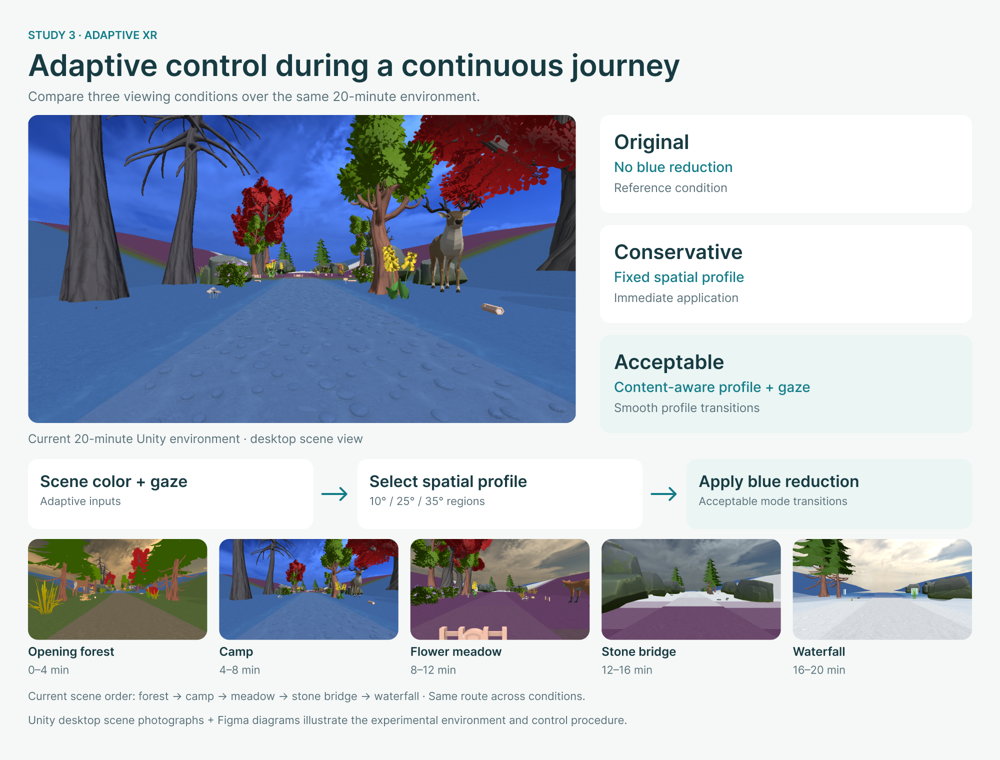

VISUAL PERCEPTION & XR
Adaptive blue-light control
A three-study investigation of visual fatigue and short-wavelength contrast sensitivity, perceptual preferences for blue-channel reduction, and adaptive control in a continuous 3D XR environment.

Research question
How should blue-channel intensity adapt during prolonged XR use to balance display power and the user's visual experience?
Research approach
Study 1 characterizes visual fatigue and short-wavelength contrast sensitivity during extended viewing. Study 2 compares blue-reduction profiles using paired perceptual choices. Study 3 brings the profiles into a continuous 3D environment with content-aware, gaze-contingent control, comparing Original, Conservative, and Acceptable modes.
Project
Adaptive Blue-Light Control for XR HMD Power Saving and Visual Fatigue Mitigation
The university project record lists March–December 2026. The project studies adaptive blue-light control in relation to visual fatigue and short-wavelength color perception.
University project recordSTUDY 1
Visual fatigue & chromatic sensitivity
The VF_video project combines a viewing session and fatigue self-report with a short-wavelength contrast task. The contrast task presents a Landolt C and fixation cross at 10°, 25°, and 35° eccentricities. This study characterizes the perceptual response to extended viewing.

STUDY 2
Perceptual preferences for blue reduction
The VF_blue_filter project presents paired video stimuli under different blue-reduction profiles. Participants choose between the two presentations. Reduction is specified separately at 10°, 25°, and 35°, with video content spanning low, colorful mid, white mid, and high blue content.

STUDY 3
Adaptive control in a continuous 3D environment
The current Unity environment follows a 20-minute continuous route through an opening forest, camp, flower meadow, stone bridge, and waterfall, in the configured order. The same route is used across Original, Conservative, and Acceptable conditions. Original applies no blue reduction; Conservative applies a fixed spatial profile immediately; Acceptable selects profiles from scene color information and uses gaze-centered reduction with smooth transitions. The project examines visual fatigue, perceptual experience, and display-power trade-offs.
